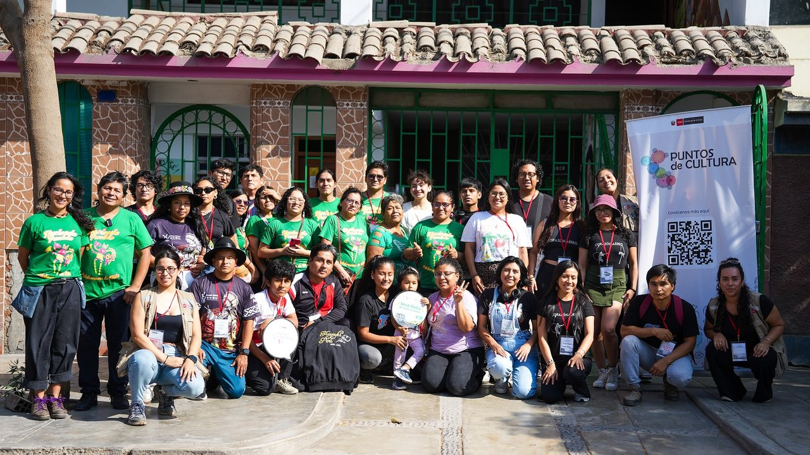
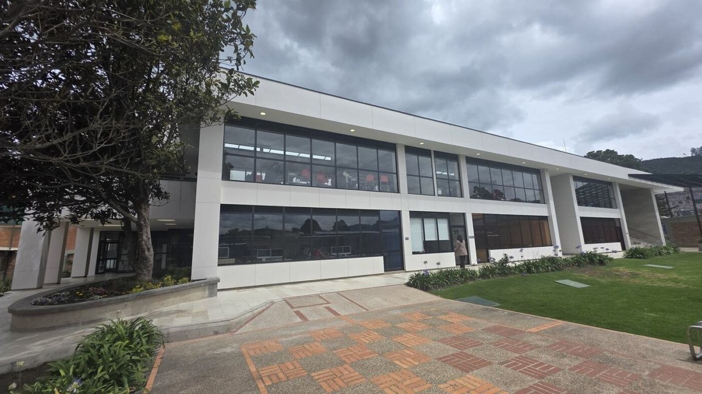
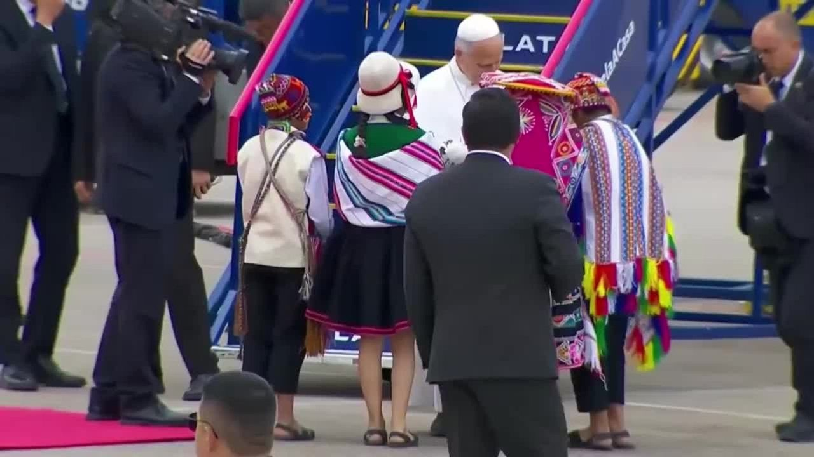

Durante la ceremonia, León catorce recordó la devoción al Señor de los Temblores, cuya historia está vinculada al terremoto que afectó a Cusco en 1650.










Durante la ceremonia, León catorce recordó la devoción al Señor de los Temblores, cuya historia está vinculada al terremoto que afectó a Cusco en 1650.
La intervención se desarrolló en las inmediaciones del paradero Horacio Zeballos, en Huaycán, y permitió detener a cuatro presuntos integrantes e intervenir a una quinta persona. El operativo estuvo a cargo de agentes de la División Regional de Inteligencia de Lima Centro, en coordinación con la Comisaría policía nacional Huaycán.
Caracas, Y arian Revete, hija de Carlos Luis Revete, conocido como «El Koki»,, reveló que su padre tuvo vínculos con el gobierno de Nicolás Maduro, cuyos miembros le proporcionaban protección, dinero y armas.
Uno de los momentos más significativos de la visita del papa León catorce a Cusco fue la entrega de un sudario a la imagen del Señor de los Temblores, conocido cariñosamente como el Taytacha y considerado patrono de la Ciudad Imperial.
Una rana marsupial que protege a sus crías en una bolsa ubicada en la espalda es la nueva especie descrita para la ciencia en el Bosque de Protección Alto Mayo, en San Martín.
El papa León catorce presidió este domingo el rezo del Ángelus en la Plaza de Armas del Cusco, donde aproximadamente 500 mil personas se congregaron en el centro histórico y las calles aledañas para recibirlo, según informó la agencia EFE.
Y, sin dudas, la situación escala cuando una banda criminal llega hasta la casa y obliga a la familia a enfrentar una amenaza inesperada. Esa es la premisa de “No nos rendimos” (en inglés: “Never Surrender” y en su idioma original “Serangan Balik”), la nueva película de acción de Netflix.
Controla los resultados del sorteo 3426 de Quini 6 del domingo 15 de noviembre y descubre si eres uno de los ganadores del acumulado.
Lucca Mesinas, Alonso Correa y Miguel Tudela le dieron el cupo al país en surf para Los Ángeles 2028 Perú obtuvo su lugar en el surf de los Juegos Olímpicos Los Ángeles 2028.
Cada edición dura menos de dos minutos. En la web tienes el resumen de cada historia y el enlace directo al medio original para leerla completa.
Conoce Olfatecho →